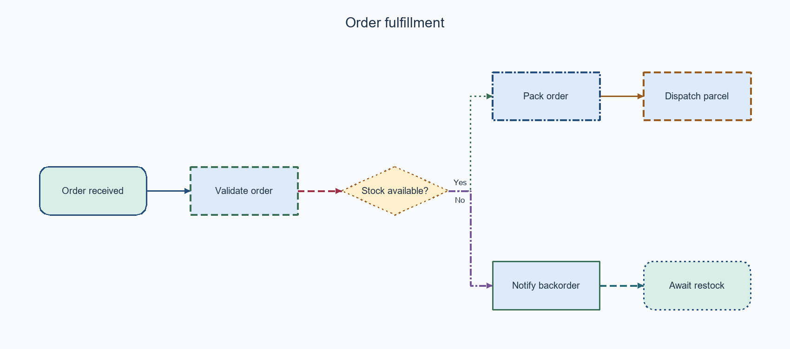
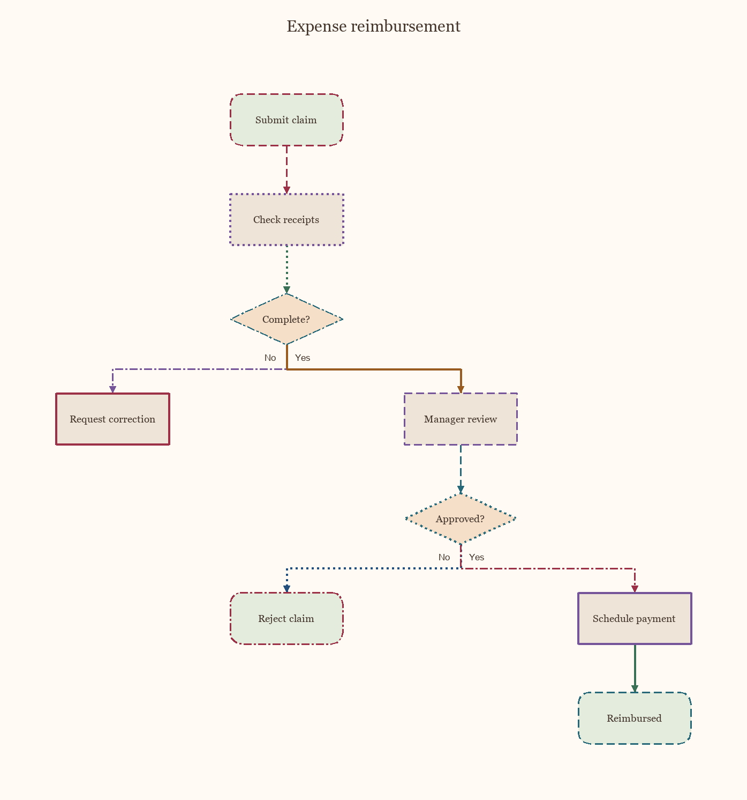
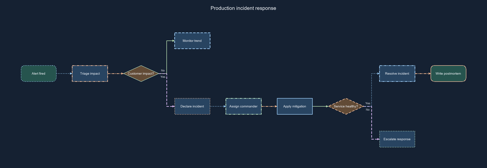
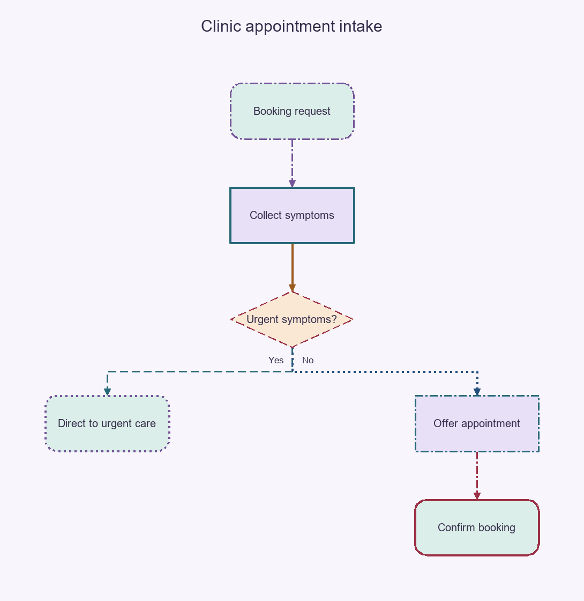
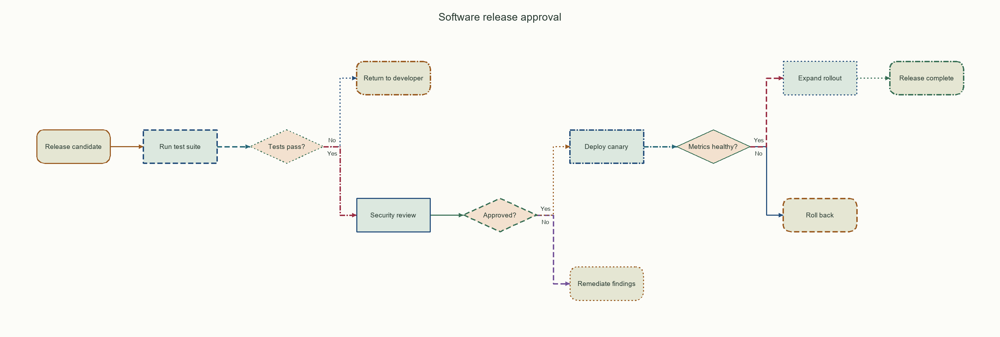
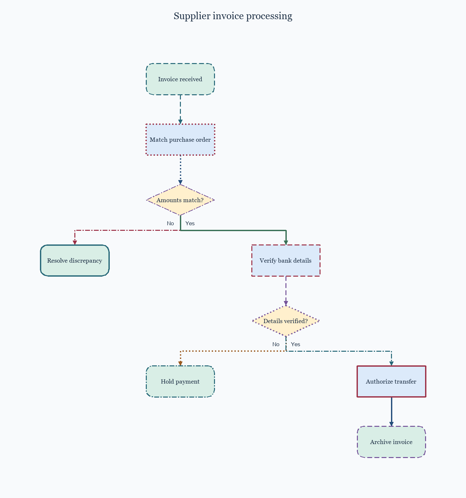
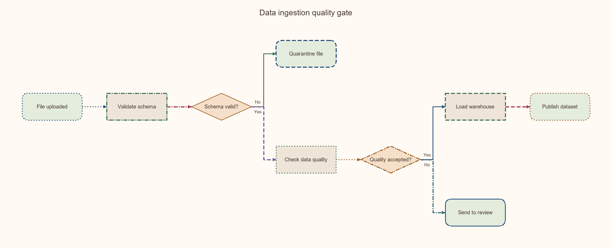
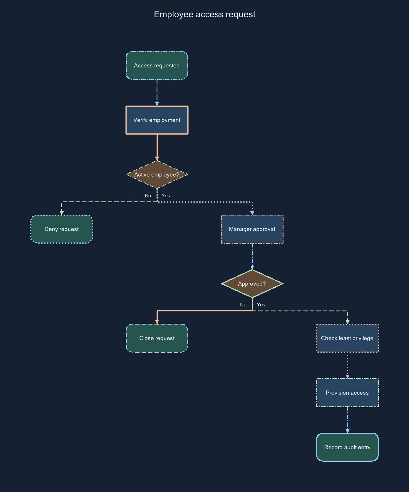
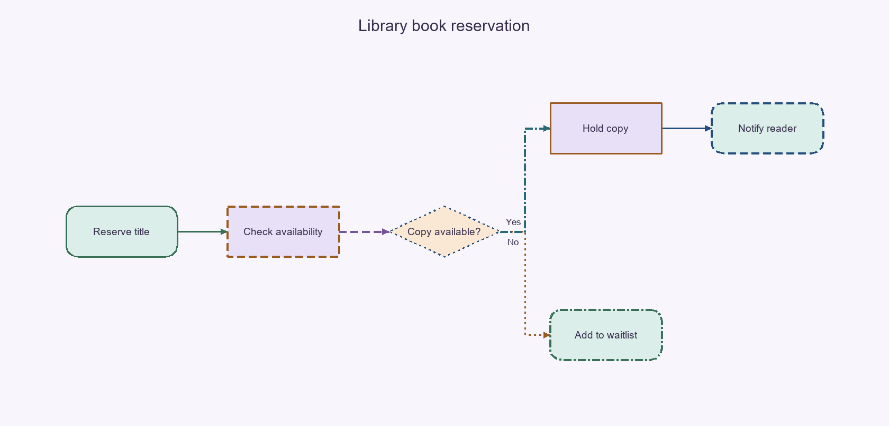
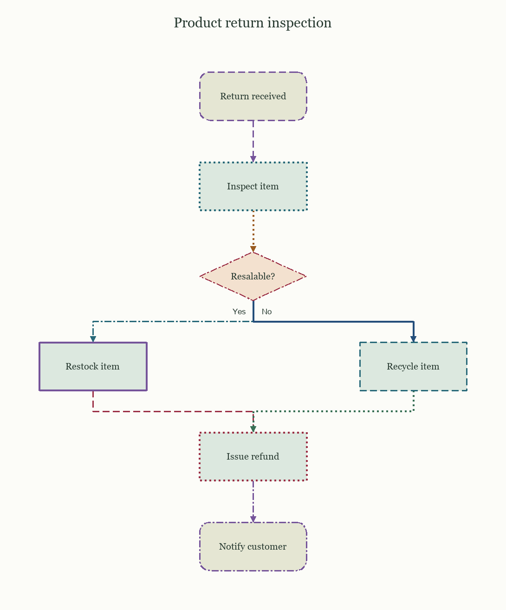

Mixed-edge flowcharts: 10 candidate negatives
Researcher-only gallery. Both box borders and arrows mix patterns and colors. Original realistic workflows; diverse layouts, palettes, complexity, typography and proportions. Difficulty and negative labels are provisional, not human-validated. No study catalog has been changed.
Import manifest · Research metadata
MIXEDGE01: Order fulfillment
easy · 7 nodes · horizontal

Order fulfillment. Workflow connections: Order received -> Validate order; Validate order -> Stock available?; Stock available? -> Pack order (Yes); Stock available? -> Notify backorder (No); Pack order -> Dispatch parcel; Notify backorder -> Await restock.
Editable SVG · Full-size PNGMIXEDGE02: Expense reimbursement
medium · 9 nodes · vertical

Expense reimbursement. Workflow connections: Submit claim -> Check receipts; Check receipts -> Complete?; Complete? -> Request correction (No); Complete? -> Manager review (Yes); Manager review -> Approved?; Approved? -> Reject claim (No); Approved? -> Schedule payment (Yes); Schedule payment -> Reimbursed.
Editable SVG · Full-size PNGMIXEDGE03: Production incident response
hard · 11 nodes · horizontal

Production incident response. Workflow connections: Alert fired -> Triage impact; Triage impact -> Customer impact?; Customer impact? -> Monitor trend (No); Customer impact? -> Declare incident (Yes); Declare incident -> Assign commander; Assign commander -> Apply mitigation; Apply mitigation -> Service healthy?; Service healthy? -> Escalate response (No); Service healthy? -> Resolve incident (Yes); Resolve incident -> Write postmortem.
Editable SVG · Full-size PNGMIXEDGE04: Clinic appointment intake
easy · 6 nodes · vertical

Clinic appointment intake. Workflow connections: Booking request -> Collect symptoms; Collect symptoms -> Urgent symptoms?; Urgent symptoms? -> Direct to urgent care (Yes); Urgent symptoms? -> Offer appointment (No); Offer appointment -> Confirm booking.
Editable SVG · Full-size PNGMIXEDGE05: Software release approval
hard · 12 nodes · horizontal

Software release approval. Workflow connections: Release candidate -> Run test suite; Run test suite -> Tests pass?; Tests pass? -> Return to developer (No); Tests pass? -> Security review (Yes); Security review -> Approved?; Approved? -> Remediate findings (No); Approved? -> Deploy canary (Yes); Deploy canary -> Metrics healthy?; Metrics healthy? -> Roll back (No); Metrics healthy? -> Expand rollout (Yes); Expand rollout -> Release complete.
Editable SVG · Full-size PNGMIXEDGE06: Supplier invoice processing
medium · 9 nodes · vertical

Supplier invoice processing. Workflow connections: Invoice received -> Match purchase order; Match purchase order -> Amounts match?; Amounts match? -> Resolve discrepancy (No); Amounts match? -> Verify bank details (Yes); Verify bank details -> Details verified?; Details verified? -> Hold payment (No); Details verified? -> Authorize transfer (Yes); Authorize transfer -> Archive invoice.
Editable SVG · Full-size PNGMIXEDGE07: Data ingestion quality gate
medium · 9 nodes · horizontal

Data ingestion quality gate. Workflow connections: File uploaded -> Validate schema; Validate schema -> Schema valid?; Schema valid? -> Quarantine file (No); Schema valid? -> Check data quality (Yes); Check data quality -> Quality accepted?; Quality accepted? -> Send to review (No); Quality accepted? -> Load warehouse (Yes); Load warehouse -> Publish dataset.
Editable SVG · Full-size PNGMIXEDGE08: Employee access request
hard · 10 nodes · vertical

Employee access request. Workflow connections: Access requested -> Verify employment; Verify employment -> Active employee?; Active employee? -> Deny request (No); Active employee? -> Manager approval (Yes); Manager approval -> Approved?; Approved? -> Close request (No); Approved? -> Check least privilege (Yes); Check least privilege -> Provision access; Provision access -> Record audit entry.
Editable SVG · Full-size PNGMIXEDGE09: Library book reservation
easy · 6 nodes · horizontal

Library book reservation. Workflow connections: Reserve title -> Check availability; Check availability -> Copy available?; Copy available? -> Add to waitlist (No); Copy available? -> Hold copy (Yes); Hold copy -> Notify reader.
Editable SVG · Full-size PNGMIXEDGE10: Product return inspection
medium · 7 nodes · vertical

Product return inspection. Workflow connections: Return received -> Inspect item; Inspect item -> Resalable?; Resalable? -> Restock item (Yes); Resalable? -> Recycle item (No); Restock item -> Issue refund; Recycle item -> Issue refund; Issue refund -> Notify customer.
Editable SVG · Full-size PNG